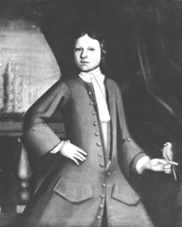

|
by Stefan Bielinski John Sanders was born in 1714. He was the second son of Albany merchant Barent Sanders and his wife Maria Wendell Sanders. Following his older brother, Robert, he learned the business of the fur trade representing his father in Schenectady and on the frontier.  In 1739, he married young Debora Glen, the only child of Jacob Glen of Schenectady. Their eleven children were born between 1740 and 1764 and baptized in Schenectady. John Sanders inherited Albany property from his father but settled in Schenectady. Following the last French and Indian War, he purchased the Glen family holdings north of the Mohawk and became a prominent merchant, developer, and civic leader in "Scotia." During the 1760s and 70s, he was among the most successful of the import merchants trading from Schenectady to the West. Calling himself a Schenectady/Scotia merchant, he filed a will in January 1779. It bequeathed substantial and wide-ranging real property holdings to his wife, son, and daughters. John Sanders died in September 1782 - the founder of an important Schenectady family. Given his substrantial holdings and standing in the Schenectady community, pursuing the Schenectady and Mohawk Valley context of his life would be much more daunting. As late as 1788, his house and lot in Albany were still on the first ward assessment rolls. His daughter, Margaret, married attorney and later congressman Kiliaen K. Van Rensselaer in 1791. They lived in Albany and kept their principal residence on Sanders' property at 116 State Street.
Sources: "John Sanders Ledger, Schenectady: 1749-83," N-YHS. Black-and-white photo of an oil painting portrait of young John Sanders set about 1724. Attributed to Nehemiah Partridge. In the collection of the Abby Aldrich Rockefeller Folk Art Center and printed in Remembrance of Patria, p. 250. Previously, the painting had been displayed in the house of Jacob Glen in Scotia. first posted: 2/12/02; last revised 3/10/08 |